Featured case study · Morrison Mentors
Supply Hub
From a supply calculator to a request and fulfillment system built around the people doing the work.
It all started with a text.
I was working as a STEM instructor and looking for practical experience as I moved into technology. I proposed a supply calculator while I was still learning Excel. After talking with management, I was encouraged to investigate operational problems worth solving.
I had seen instructors struggle to get the materials they needed. Calculating supplies from a lesson and class size seemed like a useful place to start. But the more I followed the process, the more I realized the calculation was only one part of the problem.
“What happens after this step?”
A calculator could tell us how many grams a lesson needed. Inventory staff still needed to know how many packages to prepare, where to find the request, and when to tell the instructor it was ready.
My guiding principle was ease of use: staff should be able to do their work without understanding the system behind the interface.
The process before the technology
I documented the existing workflow, the people involved, and the gaps between requesting supplies and actually receiving them. That analysis shaped the requirements for a shared request and fulfillment process.
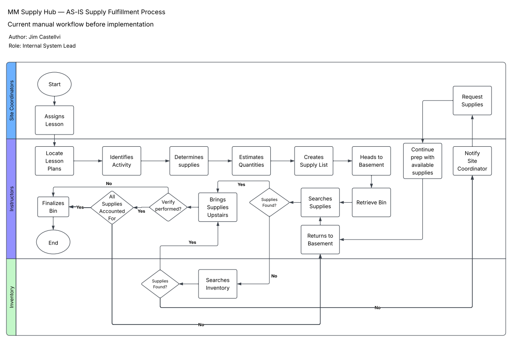
Scattered information and inconsistent requests made the next step harder to follow.
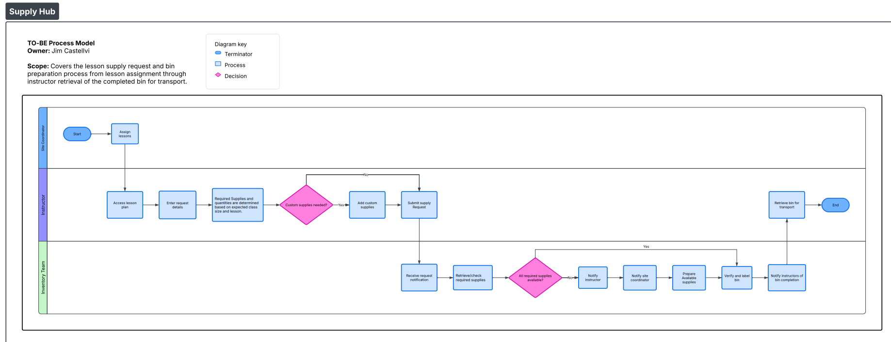
Standardized requests, centralized tracking, item verification, and automatic updates.
Select a diagram to open it at full size.
The working prototype
The request form supports instructors; the priority dashboard supports the inventory team. Together, they connect the two sides of the process.
1. Smart Request Form
The request form gives instructors a standardized way to submit supply requests. User information is automatically populated, while dropdown menus guide users through school, grade, lesson, and request details. Selecting a lesson and class size allows the system to automatically calculate the required supplies, while custom requests remain available for situations outside the standard lesson list.
How it Works.✨
01. Select Lesson
02. Enter Class Size
03.Calculate Supplies!
04.Add Custom Supplies As Needed
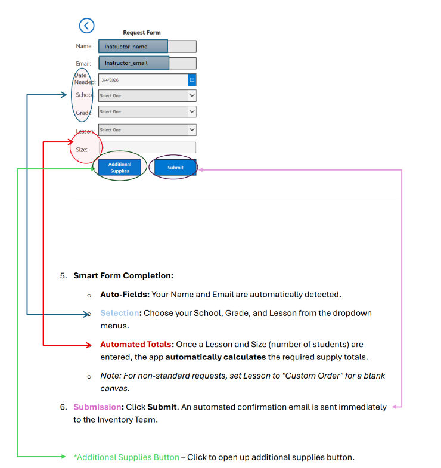
3. Priority Dashboard
The fulfillment dashboard acts as a centralized work queue for the inventory team. Requests are organized using a color-coded urgency system so staff can quickly identify overdue requests, requests due soon, and lower-priority work.
Staff can also filter between pending and completed requests, providing visibility into both active workloads and historical records.
- Red: Overdue
- Yellow: Due within 48 hours
- White: Due in more than two days
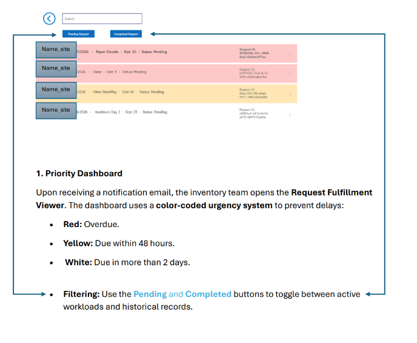
Follow the rest of the workflow: notifications, fulfillment, closure, and feedback
2. Automated Request Notification
Once a request is submitted, Power Automate sends an automated notification containing the request information and a direct link back to the Supply Hub. This reduces reliance on informal communication and creates a more consistent handoff between instructors and the inventory team.
Workflow⚡
01.Power Apps →
02.SharePoint →
03.Power Automate →
04.Inventory Team!
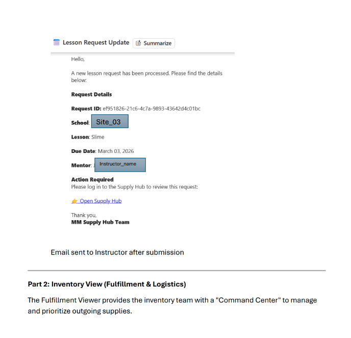
4. Item-Level Fulfillment
Each request contains individual fulfillment lines representing the supplies or equipment that need to be prepared. Inventory staff check off items as they are packed, and the request cannot be completed until every required item has been accounted for.
This workflow reflects the underlying relational design of the system: one supply request can contain many fulfillment records, allowing each item to be tracked individually while remaining connected to the original request.
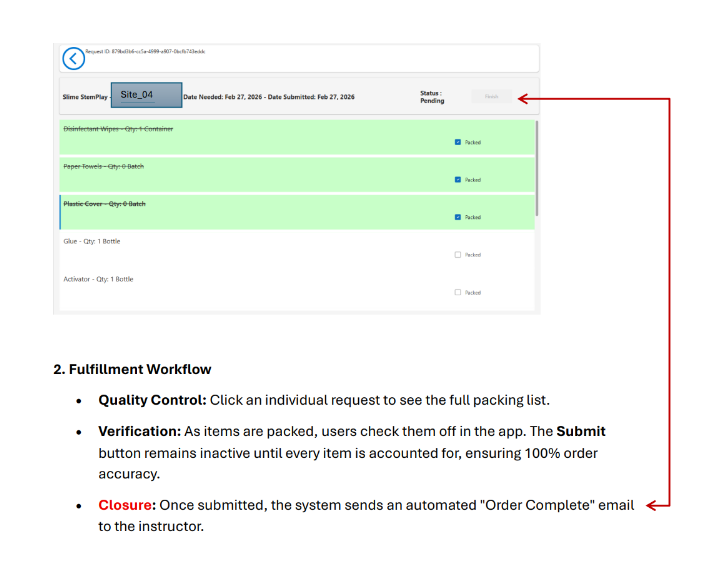
5. Automated Closure
Once fulfillment is complete, the instructor receives an automated confirmation containing the finalized supply list. This creates a clear endpoint to the request process and ensures that both the requester and inventory team know when the order has been completed.
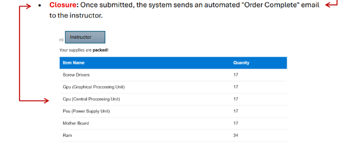
6. Feedback and Continuous Improvement
The prototype lets users submit feedback directly through the application. Feedback could be categorized as a bug, UX issue, or feature request and assigned an impact level to help prioritize future changes.
Responses were stored centrally in SharePoint, replacing informal comments with structured feedback that could be reviewed and used to guide future iterations of the system.
How Feedback Works ✨
01.Submit Feedback
02.Categorize & Assess
03.Automatically Log
04.Review & Improve
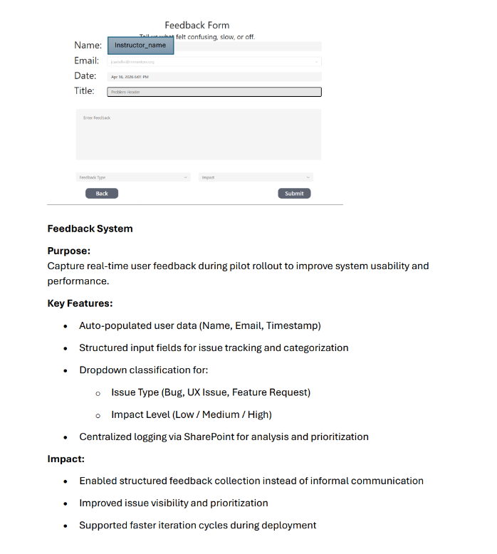
Testing with the people using it
I tested the prototype with approximately four to five people, including instructors and inventory staff. I asked users to complete common tasks without step-by-step instructions so I could see where the interface made sense and where it depended on my explanation.
I also asked computer science students to try unusual inputs, incomplete information, and unexpected navigation paths. These tests exposed assumptions that needed better validation or clearer guidance.
The physical environment mattered, too. Inventory staff worked in a basement without a readily available desktop, so the interface needed to work on tablets and phones. A visual user manual supported training and handoff.
What I delivered—and what I learned
The result was a pilot-ready supply request and fulfillment system, supported by process models, requirements, testing, and a user manual. Broader rollout was paused; I do not have measured time savings or organization-wide adoption results.
My strongest contribution was following the operational problem beyond its first obvious solution. The technical learning mattered just as much: being able to picture a useful system did not mean I knew the best way to implement it.
I also learned to stop adding features when an existing tool could do the job. I dropped a proposed two-way messaging feature because the organization already had ways to communicate.
Development history: Excel → Access → Power Apps
I started with a calculator, then ran into questions about saved requests, shared access, and relationships between records. My early Excel work included oversized ranges, complicated formulas, and duplicated supporting structures. They were attempts to solve real problems with tools I was still learning.
As I explored VBA, Access, and eventually Power Apps with SharePoint, I developed a better understanding of records, identifiers, and relationships. Looking back, I was reasoning about those needs before I knew the formal database vocabulary. The lesson was to pair that practical reasoning with stronger technical judgment and scope control.
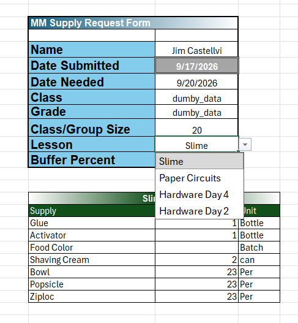
Device screenshots: desktop and mobile
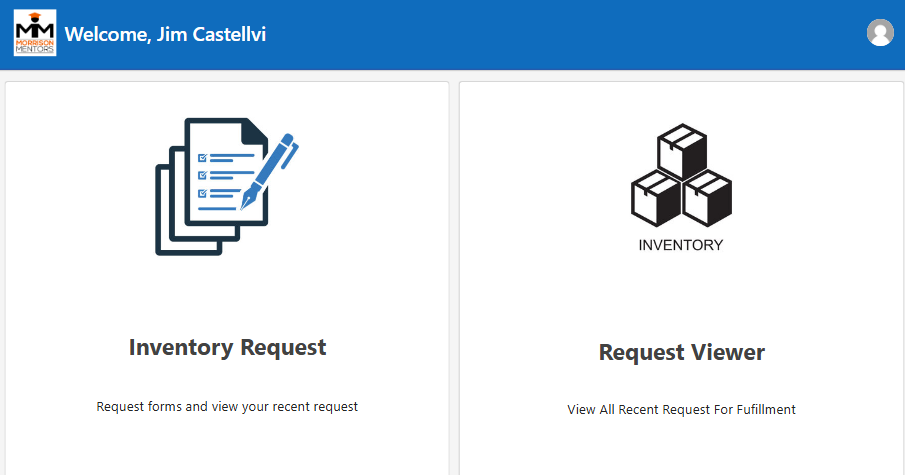
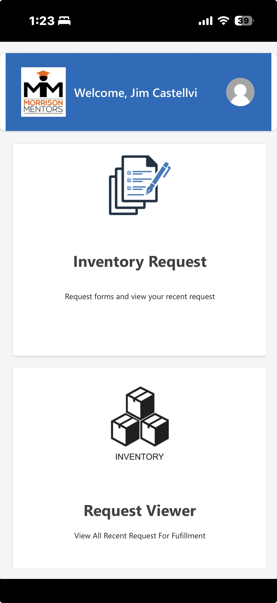
Full analysis documents and user manual
| Project Deliverable | Description | Skills Demonstrated |
|---|---|---|
| User Manual guide | An operational guide explaining how instructors and staff use the Supply Hub to submit requests, track request status, verify materials, navigate the system, and provide feedback. | Technical Documentation, User Training, Process Documentation, UX Communication, System Documentation |
| Problem Statement | Defines the problems within the existing supply process, including inconsistent request methods, limited inventory visibility, outdated information, and difficulty tracking equipment and accountability. | Problem Analysis, Root-Cause Analysis, Systems Thinking, Business Analysis, Process Improvement |
| Stakeholder Analysis | Identifies the major groups involved in the supply process and documents their responsibilities, needs, pain points, level of influence, and interactions with the system. | Stakeholder Analysis, Requirements Gathering, Communication Analysis, Business Analysis |
| AS-IS Supply Fulfillment Document | Documents the existing supply fulfillment process from lesson assignment through gathering, testing, and delivering materials, highlighting manual steps, bottlenecks, dependencies, and areas of risk. | Current-State Analysis, Workflow Analysis, Process Documentation, Bottleneck Identification, Business Process Analysis |
| Requirement Documents | Translates identified business problems and stakeholder needs into documented business, functional, and non-functional requirements for the Supply Hub system. | Requirements Analysis, Functional Requirements, Non-Functional Requirements, Business Rules, Systems Analysis |
| TO-BE Process Model | Models the redesigned supply process after implementation of the Supply Hub, showing how standardized requests, centralized information, tracking, and verification improve the workflow. | TO-BE Analysis, Process Redesign, Workflow Design, Process Modeling, Systems Thinking |
| Gap Analysis | Compares the current-state and proposed future-state processes to identify what must change in the workflow, technology, data, and staff responsibilities to reach the desired system. | Gap Analysis, Process Improvement, Solution Analysis, Business Analysis, Change Analysis |